| Waktu | V1 | A1 | W1 | F1 | V2 | A2 | W2 | F2 | V3 | A3 | W3 | F3 |
|---|---|---|---|---|---|---|---|---|---|---|---|---|
| Tekan "Ambil Data" untuk menampilkan data awal | ||||||||||||
| Waktu | VL1 | AL1 | WL1 | VL2 | AL2 | WL2 | VL3 | AL3 | WL3 |
|---|---|---|---|---|---|---|---|---|---|
| Tekan "Ambil Data" untuk menampilkan data awal | |||||||||
Komponen
Training Kit Kendali Motor Listrik 3 Fasa
Training Kit Kendali Motor Listrik 3 Fasa (HMI Based)
Training kit ini menggabungkan rangkaian kontrol motor listrik tiga fasa dengan sistem monitoring berbasis HMI. Digunakan untuk mempelajari metode kendali seperti DOL, forward–reverse, dan star–delta, serta menampilkan parameter listrik tegangan, arus, daya, frekuensi, dan faktor daya secara real-time.
Desain Training Kit
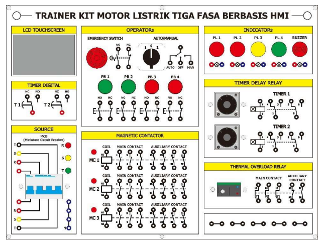
Training Kit Kendali Motor Listrik Tiga Fasa Berbasis Human-Machine Interface (HMI) terdiri dari beberapa bagian utama yang saling terintegrasi untuk mendukung proses pengendalian dan monitoring sistem.
Miniature Circuit Breaker (MCB) 3 Fasa
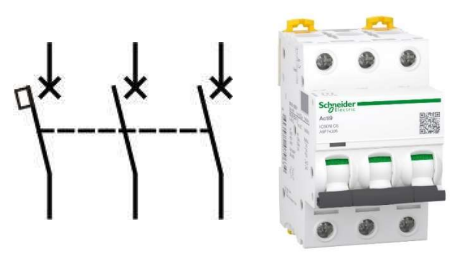
MCB 3 fasa berfungsi sebagai pengaman utama pada rangkaian daya. Komponen ini melindungi sistem dari gangguan seperti hubung singkat dan arus lebih pada jaringan tiga fasa atau rangkaian daya pada motor listrik.
Miniature Circuit Breaker (MCB) 1 Fasa
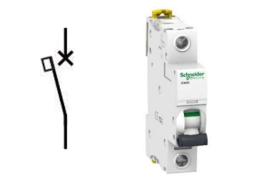
MCB 1 fasa digunakan sebagai pengaman pada rangkaian kontrol. Komponen ini melindungi peralatan kontrol dan sistem monitoring dari gangguan arus berlebih.
Lampu Indikator
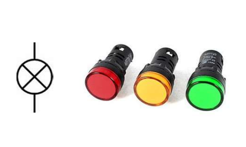
Lampu indikator berfungsi sebagai penanda kondisi sistem. Lampu ini menunjukkan status kerja seperti sistem aktif, standby, atau terjadi gangguan.
Push Button
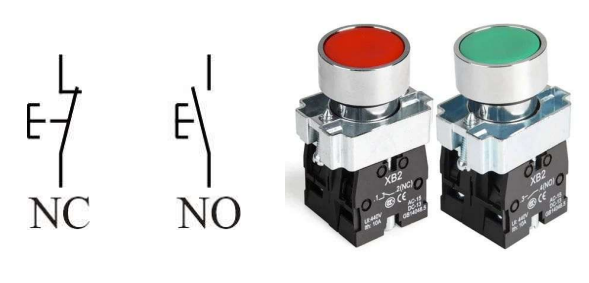
Push button digunakan sebagai tombol kendali untuk mengoperasikan sistem, seperti tombol ON, OFF, dan fungsi lainnya. Komponen ini memungkinkan pengguna memberikan perintah secara langsung pada sistem.
Emergency Switch
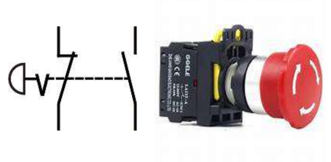
Emergency switch berfungsi sebagai tombol darurat untuk menghentikan sistem secara cepat. Komponen ini memutus aliran listrik saat terjadi kondisi berbahaya.
Selector Switch
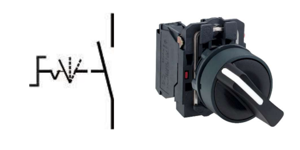
Selector switch berfungsi untuk memilih mode operasi pada sistem. Komponen ini digunakan untuk mengatur pilihan kerja sesuai kebutuhan. Selain itu, selector switch juga memudahkan pengguna dalam mengalihkan kondisi operasi secara cepat dan aman, sehingga sistem dapat bekerja lebih fleksibel dan terkontrol sesuai dengan pengaturan yang diinginkan.
Magnetic Contactor
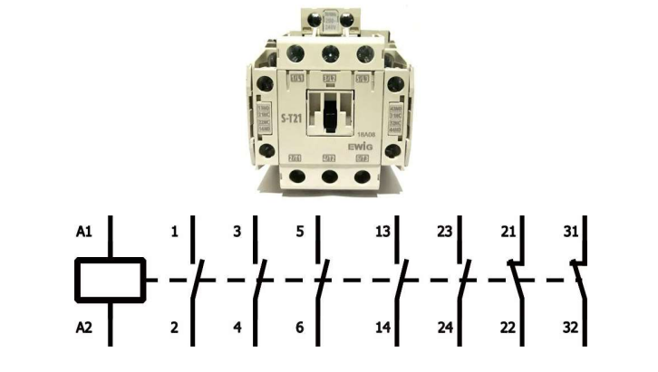
Magnetic contactor berfungsi sebagai saklar elektromagnetik yang menghubungkan dan memutus aliran listrik ke motor. Komponen ini merupakan bagian utama dalam sistem kendali motor listrik.
Thermal Overload Relay (TOR)
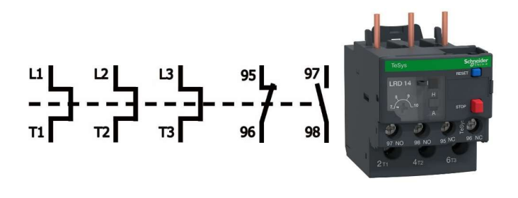
TOR berfungsi sebagai pengaman terhadap beban lebih pada motor. Komponen ini akan memutus rangkaian apabila arus yang mengalir melebihi batas yang telah ditentukan.
Timer Delay Relay
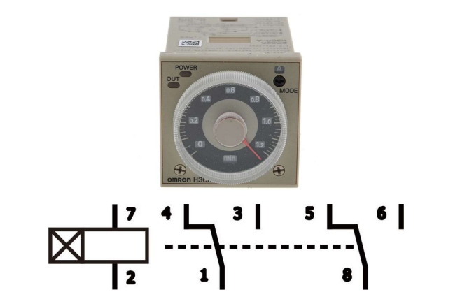
Timer Delay Relay merupakan komponen kontrol yang berfungsi untuk memberikan jeda waktu (delay) pada proses kerja rangkaian listrik. Pada training kit ini, timer delay relay digunakan pada rangkaian star-delta otomatis untuk mengatur perpindahan kontaktor dari hubungan star ke delta setelah beberapa detik sehingga proses starting motor dapat berjalan lebih aman dan stabil.
Modul ESP32
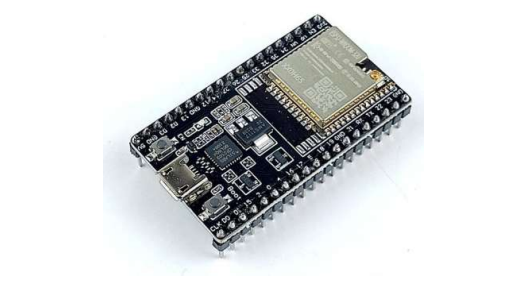
ESP32 merupakan mikrokontroler yang berfungsi sebagai pengolah data dalam sistem monitoring. Modul ini menerima data dari sensor dan mengirimkannya ke HMI untuk ditampilkan.
LCD Nextion
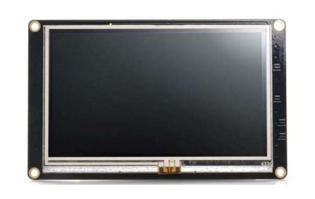
LCD Nextion berfungsi sebagai tampilan antarmuka (Human-Machine Interface). Komponen ini digunakan untuk menampilkan parameter kelistrikan secara visual dan real-time.
Power Meter PZEM-004T
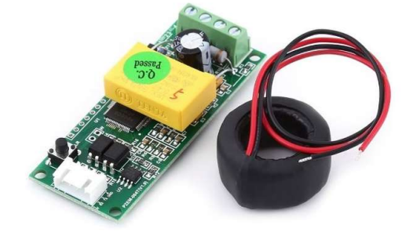
PZEM-004T merupakan sensor yang digunakan untuk mengukur parameter kelistrikan seperti tegangan, arus, daya, energi, frekuensi, dan faktor daya. Data hasil pengukuran akan ditampilkan melalui HMI.
Materi
Wiring Diagram Rangkaian
- Wiring Diagram Direct On-Line (DOL)
- Wiring Diagram Forward-Reverse
- Wiring Diagram Star-Delta
- Wiring Diagram Star-Delta Otomatis
- Wiring Diagram Star-Delta Otomatis dengan HMI
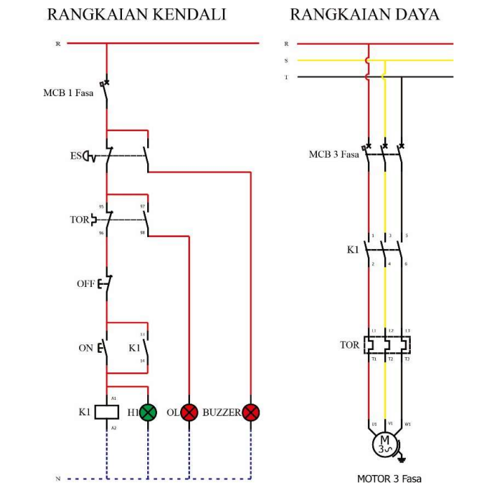
Wiring diagram Direct On-Line (DOL) digunakan sebagai panduan penyambungan rangkaian pengasutan motor listrik tiga fasa secara langsung ke sumber tegangan. Rangkaian ini terdiri dari komponen utama seperti push button, kontaktor, thermal overload relay (TOR), dan motor listrik tiga fasa. Penggunaan rangkaian DOL bertujuan untuk memahami prinsip dasar pengoperasian dan pengendalian motor listrik secara sederhana.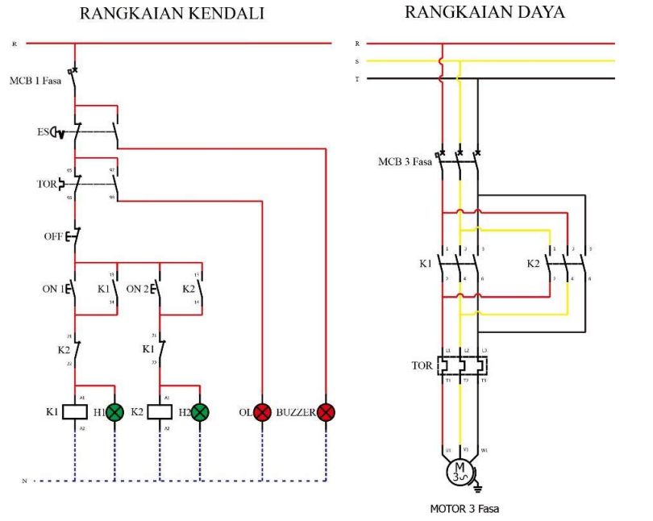
Wiring diagram forward-reverse digunakan sebagai panduan penyambungan rangkaian kendali motor listrik dengan dua arah putaran. Sistem ini bekerja dengan cara menukar dua fasa pada rangkaian daya sehingga motor dapat berputar maju (forward) maupun mundur (reverse). Pada rangkaian ini digunakan sistem interlock untuk mencegah kedua kontaktor bekerja secara bersamaan demi menjaga keamanan sistem.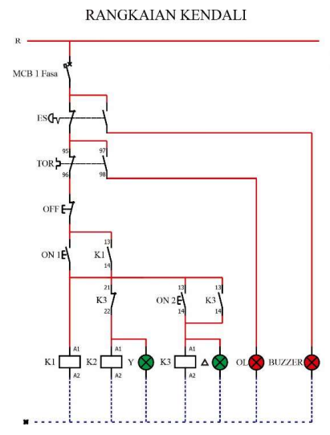
Wiring diagram star-delta digunakan sebagai panduan penyambungan rangkaian pengasutan motor listrik tiga fasa dengan metode star-delta secara manual. Pada saat starting, motor dihubungkan dalam konfigurasi bintang (star) untuk mengurangi arus awal yang mengalir ke motor. Selanjutnya, perpindahan dari hubungan star ke delta dilakukan secara manual menggunakan push button sesuai prosedur pengoperasian. Rangkaian ini menggunakan beberapa komponen utama seperti kontaktor, push button, thermal overload relay (TOR), dan motor listrik tiga fasa sebagai sistem pengendali. Penggunaan rangkaian star-delta manual bertujuan untuk membantu pengguna memahami prinsip dasar perpindahan hubungan star ke delta secara langsung pada sistem kendali motor listrik tiga fasa.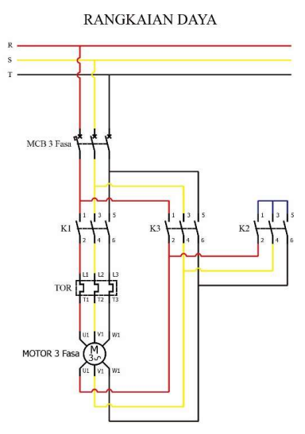
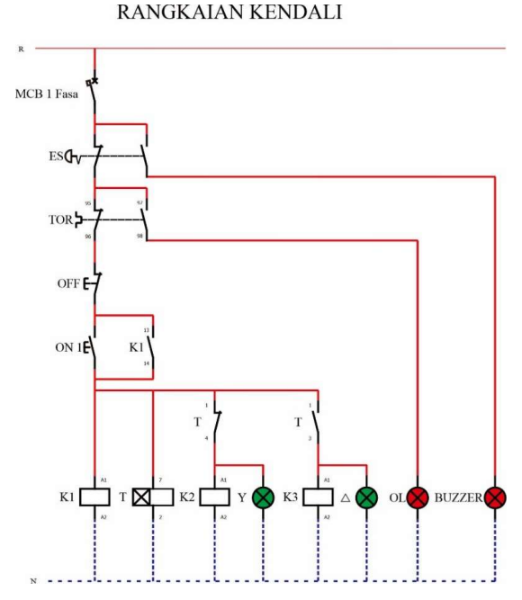
Wiring diagram star-delta otomatis digunakan sebagai panduan penyambungan sistem pengasutan motor listrik tiga fasa dengan perpindahan hubungan star ke delta secara otomatis menggunakan timer. Sistem akan menghubungkan motor pada konfigurasi star saat awal pengoperasian, kemudian secara otomatis berpindah ke konfigurasi delta setelah waktu tertentu sesuai pengaturan timer. Proses perpindahan kontaktor dilakukan secara otomatis tanpa pengoperasian manual oleh pengguna. Penggunaan sistem ini bertujuan untuk membantu pengguna memahami prinsip kerja otomasi pada sistem starting motor listrik tiga fasa.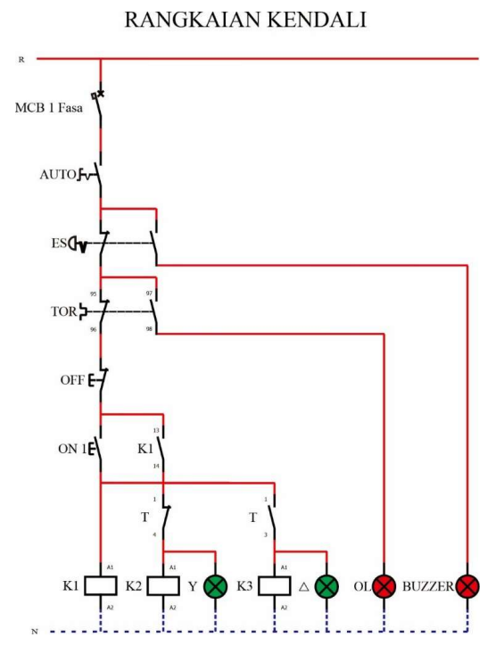
Wiring diagram star-delta otomatis dengan HMI digunakan sebagai panduan penyambungan sistem pengasutan motor listrik tiga fasa yang terintegrasi dengan Human-Machine Interface (HMI). Sistem ini memanfaatkan timer digital pada HMI sebagai pengatur waktu perpindahan dari hubungan star ke delta. Melalui tampilan HMI, pengguna dapat melakukan pengaturan waktu delay sesuai kebutuhan praktikum sehingga proses pengoperasian menjadi lebih mudah dan fleksibel. Setelah parameter waktu ditentukan, sistem akan menjalankan proses perpindahan kontaktor secara otomatis berdasarkan pengaturan pada HMI. Penggunaan rangkaian ini bertujuan 21 untuk membantu pengguna memahami penerapan HMI pada sistem otomasi dan monitoring motor listrik tiga fasa